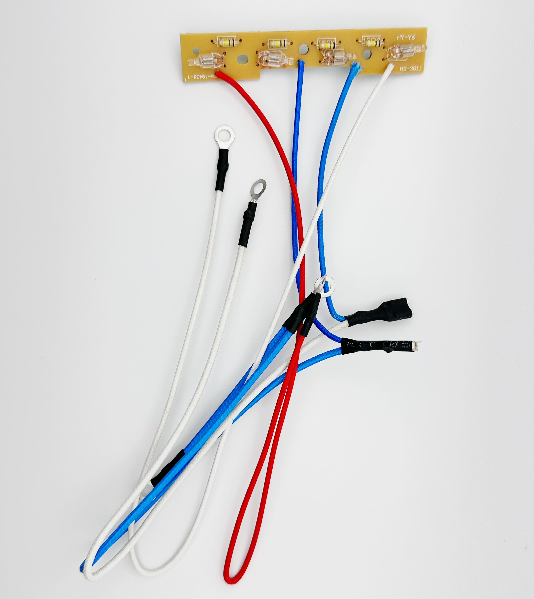
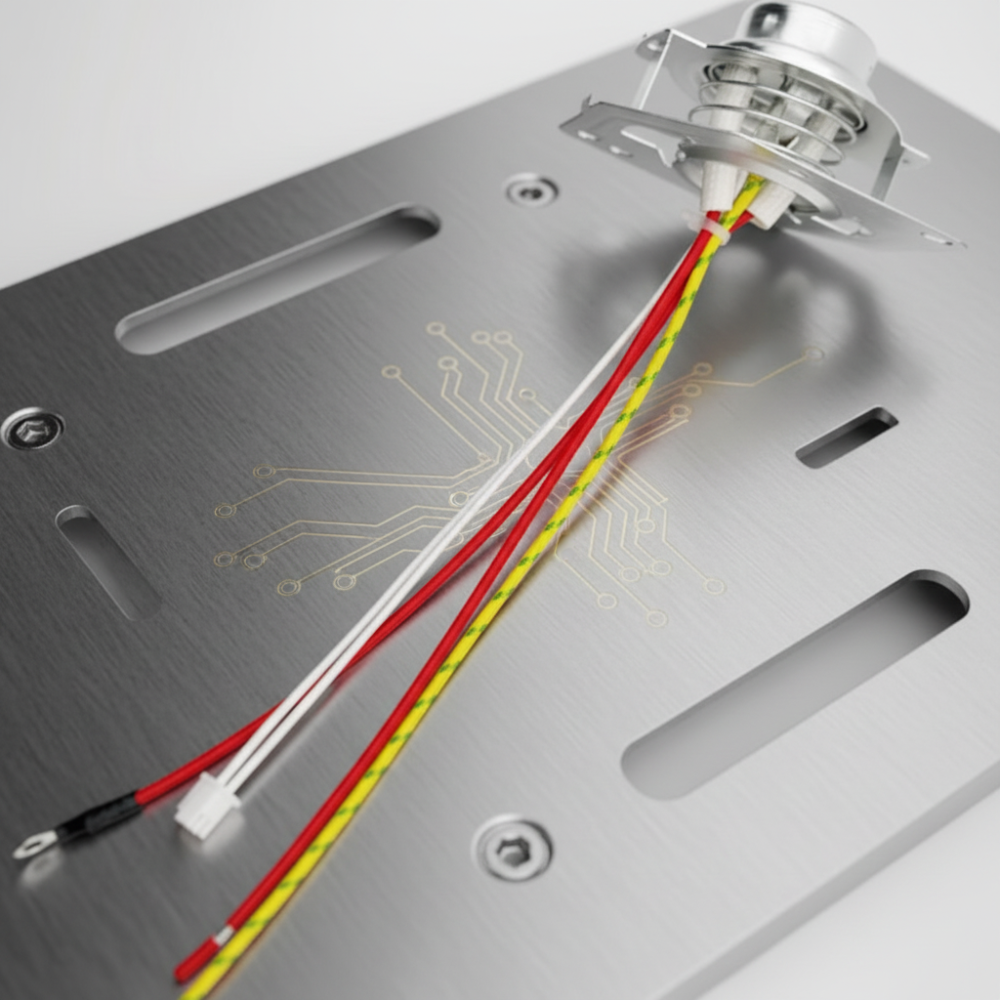
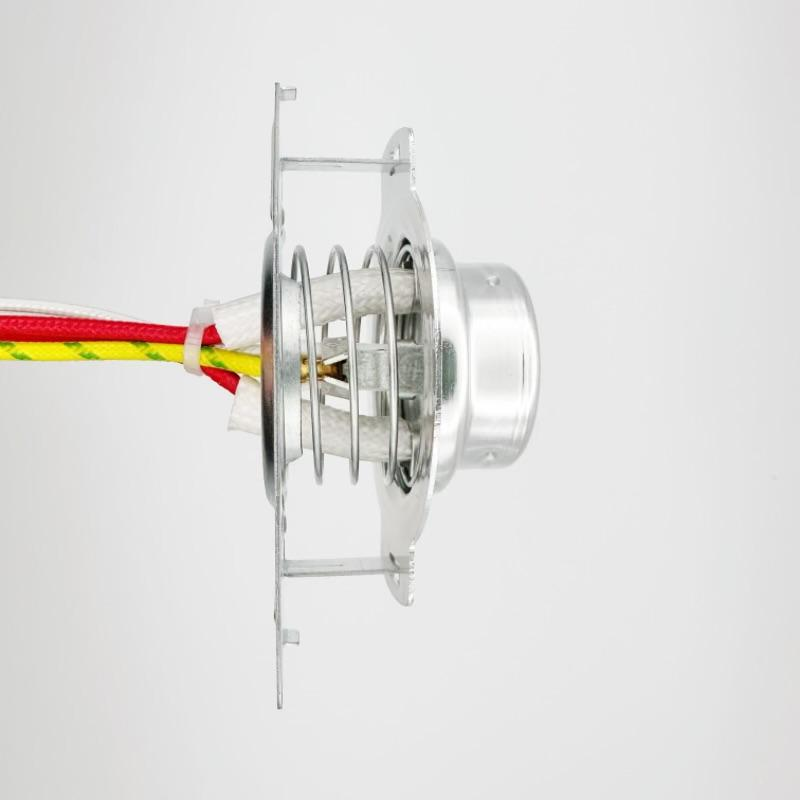
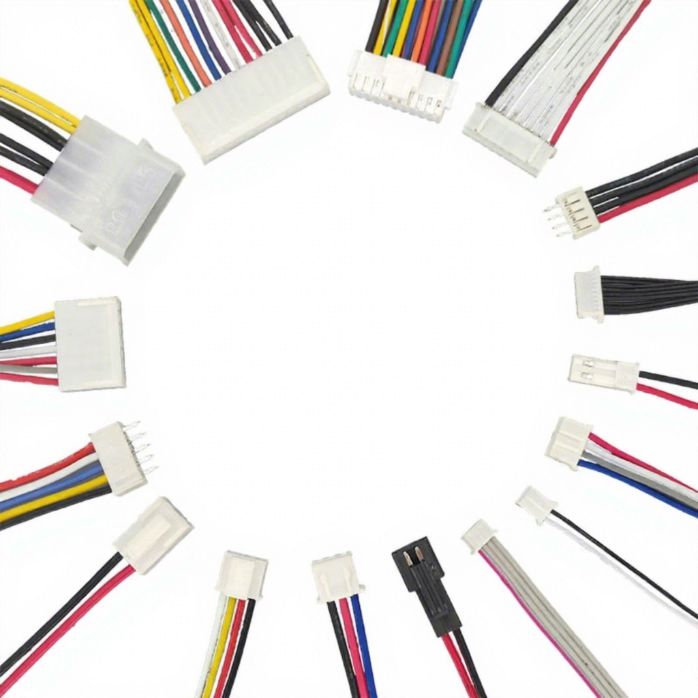
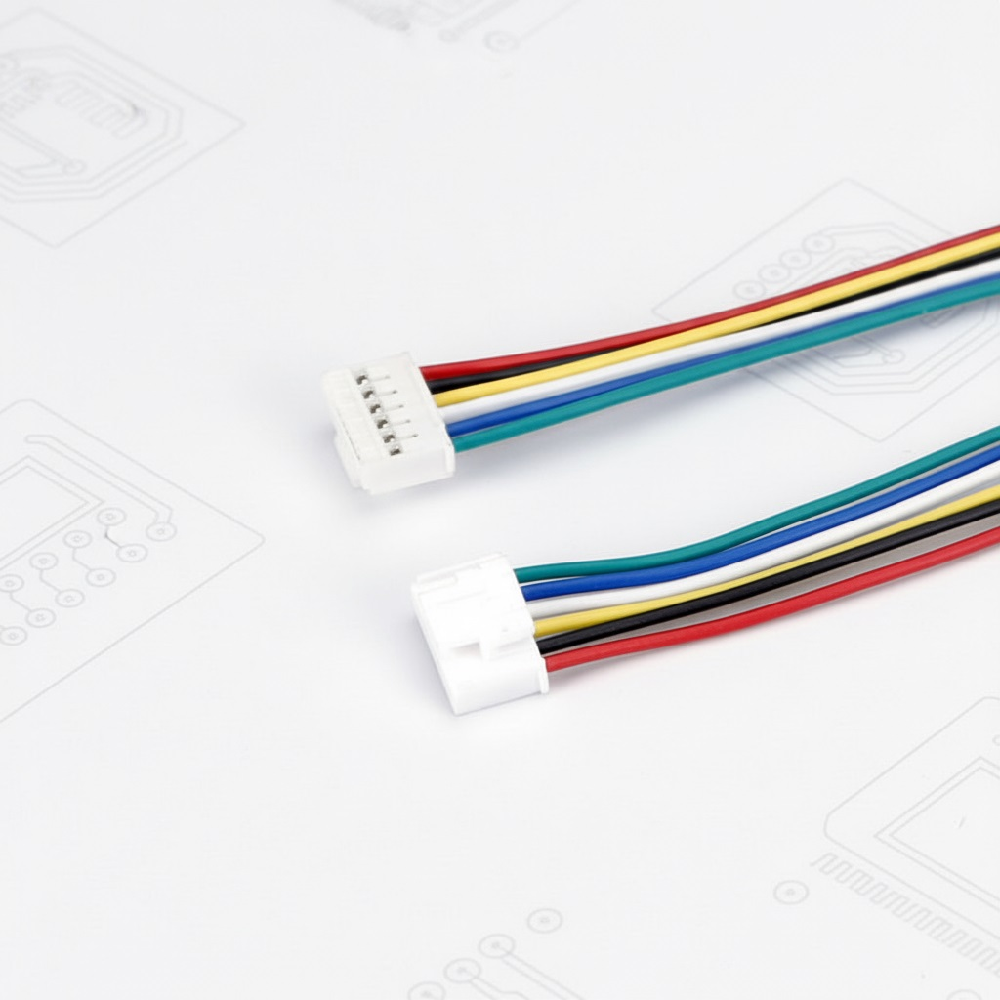
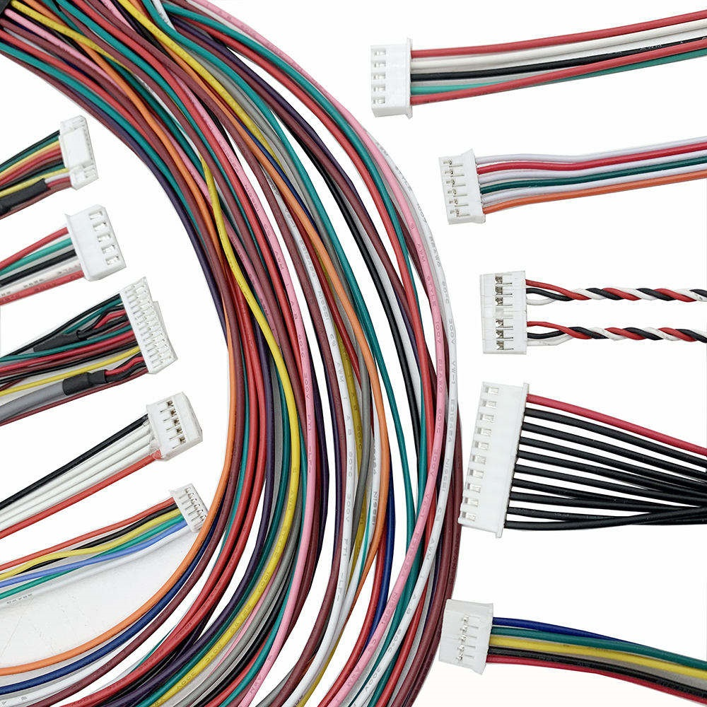
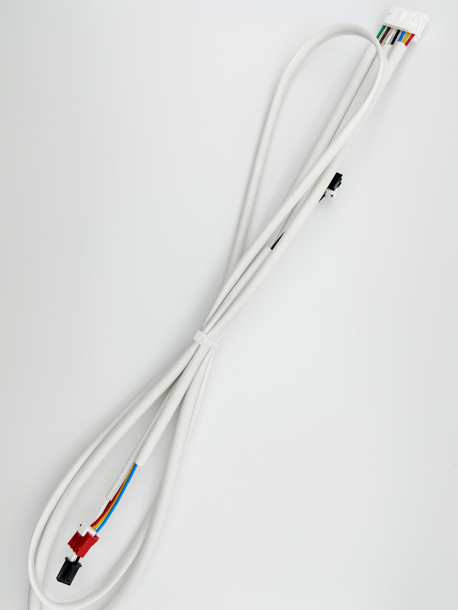
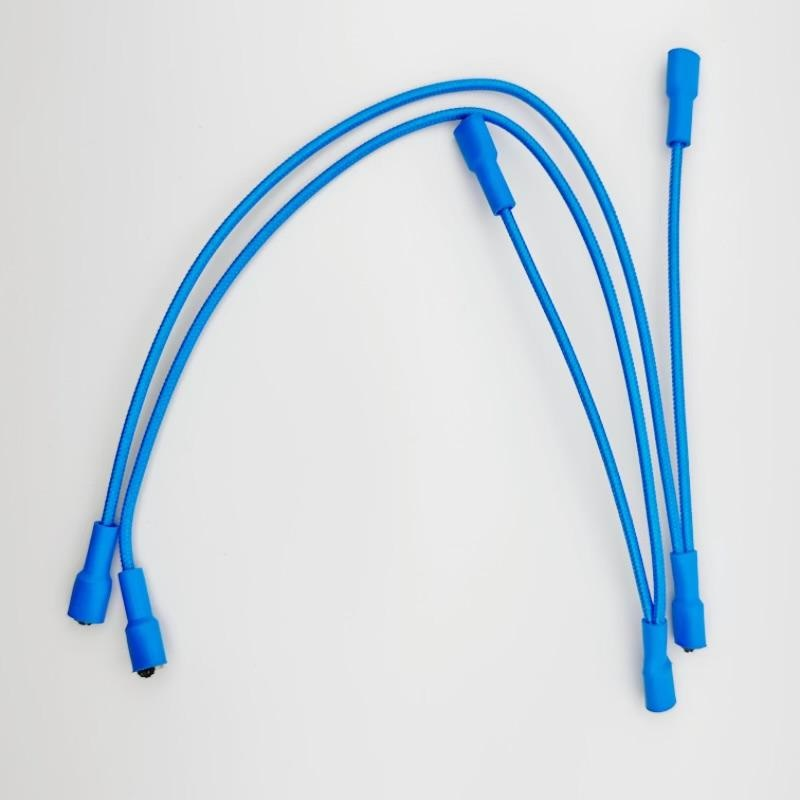
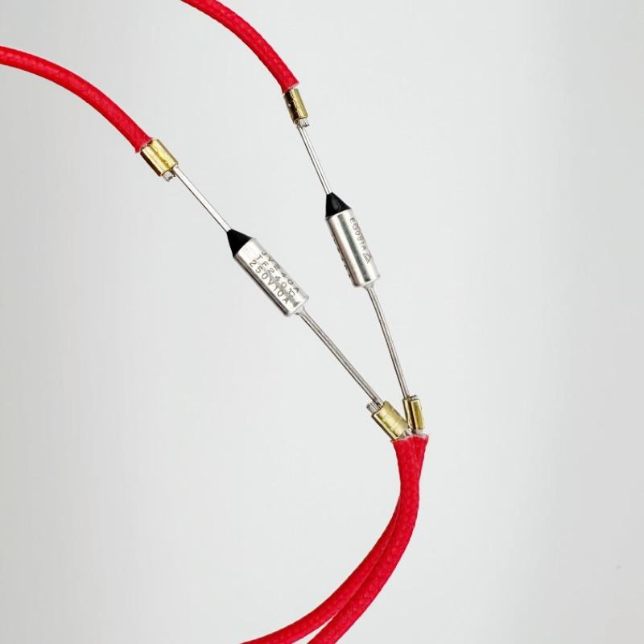

Premium Quality Sensors & Connection Lines for Home Appliances
High-precision temperature sensing solutions for refrigerators, air conditioners, ovens, water heaters, and HVAC systems. Our NTC thermistors and temperature probes deliver accurate readings in extreme conditions.

Precision NTC thermistor for refrigerator and freezer applications. Wide temperature range (-40°C to +125°C), fast response time, and excellent long-term stability.
SEO Keywords: NTC thermistor manufacturer, temperature sensor for refrigerator, custom thermistor probe, appliance temperature sensor supplier
Request Quote
High-temperature resistant probe designed for ovens, grills, and cooking appliances. Stainless steel housing with silicone cable insulation.
SEO Keywords: oven temperature probe, high temp sensor manufacturer, cooking appliance sensor, stainless steel temperature probe
Request Quote
Industrial-grade temperature sensor for HVAC systems, air handlers, and climate control units. Designed for continuous operation in demanding environments.
SEO Keywords: HVAC temperature sensor, industrial temperature probe, climate control sensor, custom HVAC sensor manufacturer
Request QuoteHigh-quality flat cable assemblies and wire harnesses for home appliance internal connections. Custom lengths, colors, and connector configurations available.

Flexible multi-conductor flat cable for internal appliance wiring. PVC insulation, copper conductors, available in 2-12 conductor configurations.
SEO Keywords: flat cable manufacturer, multi conductor flat cable, appliance wire harness, custom flat cable assembly
Request Quote
EMI-shielded flat cable for noise-sensitive applications. Aluminum foil shielding with drain wire for superior EMI/RFI protection.
SEO Keywords: shielded flat cable, EMI protected wire harness, signal cable manufacturer, appliance data cable
Request Quote
Specialized flat cable for high-temperature environments. Silicone insulation rated for continuous operation up to 200°C.
SEO Keywords: high temperature flat cable, silicone wire harness, heat resistant cable, appliance high temp wiring
Request QuoteProfessional connection line solutions with heat shrinkable tube protection for secure, insulated connections in home appliances and industrial equipment.

Dual wall heat shrink tubing with adhesive lining for waterproof, strain-relieved connections. 3:1 shrink ratio for versatile applications.
SEO Keywords: dual wall heat shrink tube, waterproof heat shrink tubing, adhesive lined tubing, connection line protection
Request Quote
Ultra-flexible polyolefin heat shrink tubing for tight-radius applications. Low shrink temperature protects sensitive components.
SEO Keywords: flexible heat shrink tubing, polyolefin heat shrink tube, low temp heat shrink, wire connection protection
Request Quote
Complete sensor and connection line assembly with integrated heat shrink protection. Fully customized to your specifications.
SEO Keywords: custom sensor assembly, integrated sensor cable, OEM sensor solution, appliance sensor manufacturer
Request QuoteAll our products can be customized to meet your specific requirements. Contact us for OEM/ODM solutions.
Get Custom Quote